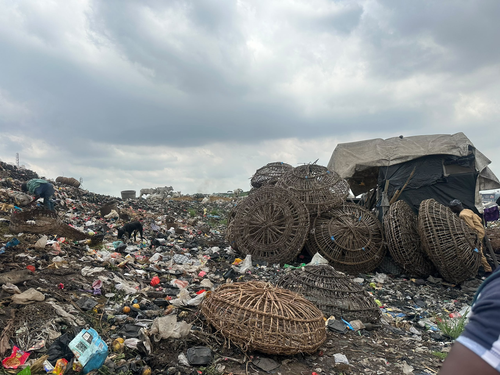

A growing concern,
a shared environment.
Concerns over waste disposal, poor drainage and environmental sanitation have become major issues requiring attention in Ile Epo Market and its surrounding communities in Lagos State.
The situation has raised questions about the effectiveness of waste management, the responsibility of environmental authorities and the possible health risks associated with poor sanitary conditions.
When waste has
nowhere to go.
At Ile Epo Market, the activities of traders and customers generate different forms of waste, including food remains, plastic materials, nylon bags and other disposable items. How these wastes are collected and disposed of remains an important environmental concern, particularly where adequate waste collection facilities and regular evacuation may be lacking.
Residents in the surrounding communities are also concerned about the possible consequences of indiscriminate waste disposal and blocked drainage channels, especially during the rainy season when accumulated refuse can obstruct the free movement of water and contribute to flooding.

More than an
environmental issue.
The environmental situation also raises concerns about the possible spread of diseases. Stagnant water and improperly disposed refuse can create breeding grounds for mosquitoes, rodents and other disease-carrying organisms, exposing residents and traders to potential health risks.
At the market, the environmental challenges could also affect traders’ businesses through unpleasant odours, contamination of goods and uncomfortable trading conditions.
Who is responsible
for a cleaner market?
Further investigation at the office of the relevant local government authority, Agbado-Oke-Odo Local Council Development Area, near Abule Egba, is expected to establish the government’s waste management plans and its response to environmental concerns in the area.
The council, alongside the Lagos State Waste Management Authority (LAWMA) and the Lagos State Environmental Protection Agency (LASEPA), has an important role in ensuring proper waste disposal, drainage maintenance and enforcement of environmental regulations.
QUESTIONS THAT REMAIN
- How frequently is waste evacuated?
- Are designated refuse collection points available?
- What challenges do environmental authorities face?
However, questions remain about the frequency of waste evacuation, the availability of designated refuse collection points and the challenges environmental authorities face in maintaining sanitation around the market and neighbouring streets.
The leadership of Ile Epo Market, including the Iyaloja and Babaloja, also has a responsibility to encourage proper sanitation among traders and discourage indiscriminate dumping of refuse.
Health workers at the Primary Health Centre serving the community are another important source of information in determining whether environmental conditions are contributing to health problems among residents.
A cleaner Ile Epo
takes all of us.
Environmental experts and public health authorities have consistently emphasised the importance of proper waste management, clean drainage systems and community participation in preventing environmental health hazards.
There is therefore a need for stronger collaboration between residents, market leaders and government agencies to improve environmental sanitation in Ile Epo.
As the rainy season approaches, the need for regular drainage clearance, proper waste collection and public awareness becomes increasingly important.
Ultimately, maintaining a clean environment requires more than occasional sanitation exercises. It demands consistent government action, effective monitoring and the cooperation of residents and traders.